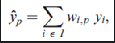
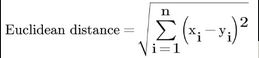
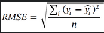
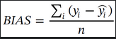
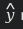
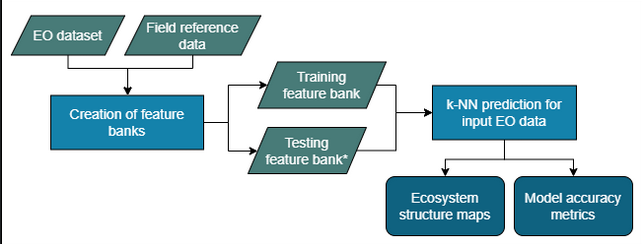
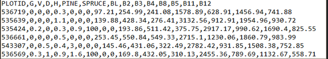

Authors:
Oleg Antropov, Lauri Seitsonen, Jukka Miettinen
Reviewed/Edited by:
Marcos Kavlin
This user guide provides an overview of the k-Nearest Neighbours (k-NN) tool. This overview includes the following sections:
- Scientific Basis
- Description of the Tool
- References
1. SCIENTIFIC BASIS
1.1 INTRODUCTION
There is a long tradition of forest structural variable (e.g. height, diameter, basal area and volume) prediction combining field reference data and EO datasets. Satellite based methods for prediction of forest structural variables in 10-30 m resolution have been developed since the 1990’s with multispectral images (Tomppo 1991; Tokola et al. 1996; Häme et al. 2013), and are still in operational use together with new data sources like LiDAR and polarimetric and interferometric SAR data (Antropov et al., 2016, Kangas et al. 2018, Tomppo et al., 2019). The k-Nearest Neighbor method (k-NN Alt, 2001), has been widely used for forest monitoring, particularly in the boreal zone (Tomppo 1991, Tokola et al. 1996, Tomppo 2008) and is operationally used for the Finnish National Forest Inventory (Mäkisara et al. 2022). One of the key benefits of the k-NN method is the capability for simultaneous prediction of all variables of interest. This helps retain relationships between variables (e.g. height and volume) at any given point, better than methods that predict one variable at a time.
1.2 DESCRIPTION OF THE METHOD
The tool is an implementation of a generic non-parametric and distribution-free k-Nearest Neighbour method (k-NN) (Alt, 2001). The predictions for the target variable values are obtained as linear combinations of target variable values in a set of observations selected from a reference feature bank. The reference feature bank should contain combinations of reference target variable values with the corresponding EO and auxiliary data features. The observations are selected by Euclidean distance on the EO and auxiliary variable space. The reference observations with the smallest distances to the target pixel in the EO and auxiliary space are selected. Simultaneous prediction of all variables of interest can be conducted. The k-NN is a non-parametric estimator since predictions can be made without any parameters, as well as distribution-free prediction method because predictions can be made without any prior distributional assumptions.
The k-NN predicted target variable value \(Y_p\) for pixel \(_p\) is calculated as:

where \(y_i\) is the target variable value of the \(i^{th}\) contributing observation in the reference set, \(I\) is the subset of nearest observations used for the prediction, and \(w_{i,p}\) is the weight of the \(i^{th}\) contributing observation. In the implementation described here, the observations are weighed inversely to the Euclidean distance.
The Euclidean distance is calculated as:

where \(x_i\) is the target pixel feature \(i\) and \(y\) is the corresponding value for an observatio in the training feature bank. The number of nearest observations used in the prediction typically vaires from three to over 15, depending on the number and characteristics of the available field reference data.
In addition to the output map layer (i.e. the target variable predictions), general uncertainty metrics are calculated from the feature banks, the user has an option to divide the feature bank to training and testing feature banks. The training feature bank is used to predict values for the observations in the testing feature bank. The predictions are then compared to the observations to calculate the Root Mean Square Error (RMSE) and bias of the predictions as:
 
where \(y\) represents the observed reference values,  represents the predicted values and n is the number of samples. Both RMSE and bias are provided in absolute terms and as % of the mean.
2. DESCRIPTION OF THE TOOL
2.1 TOOL OVERVIEW AND PURPOSE
The provision of a generic k-NN tool as part of the PEOPLE-ER toolbox allows users to derive additional information on the status of the ecosystem with a variety of datasets. The tool is not limited to any specific type of reference or remotely sensed data, but can be used with the datasets available for the area of interest. The PEOPLE-ER k-NN tool should be seen as a supporting tool for the main ecosystem recovery monitoring tools developed in the project. This tool can be used to provide further information within and around the restoration areas, benefiting from the field reference data the users have collected.
2.2 TOOL WORKFLOW
The tool operates using the following approach:
- The tool requires as input any Earth Observation (EO) data (in .tif format) and a corresponding set of field reference data. The field reference dataset should include reference measurements of the target variables, and should temporally coincide with the EO data.
- With these datasets, a feature bank is created, combining the target variable values and corresponding EO band values. In an optimal case the feature bank is split into a training feature bank (used to create the maps) and testing feature bank (used to derive model accuracy metrics).
- With the feature banks, target variable maps can be run for any EO image from the same region. In addition, the tool provides model accuracy metrics calculated from the testing feature bank.

2.3 TOOL INPUTS
The required inputs can be divided into two categories.
- Inputs required for the feature bank creation, which include:
- EO (and any auxiliary feature as desired) layers from the time of the reference data collection.
- Representative reference data from the area of interest.
- Inputs required for the k-NN based map creation:
- Selected EO and auxiliary feature layers for the desired date.
- Training feature bank .csv file including the target and EO/auxiliary variables (see Figure 2).
- (Optional) Testing feature bank .csv file.
- Selection of the number of neighbours (k) to be used.
- All processing parameters can be stored in a "knnsettings.csv" file or input manually from the keyboard.

The EO and auxiliary dataset needs to be in .tif format and it needs to contain the same layers in the same order as provided in the Feature bank .csv files. The .csv files can be created in any GIS software by extracting image band and auxiliary data values for the corresponding target variable values (at a pixel or polygon level depending on the field data's unit of analysis). In addition the comma separated target variable and EO feature values, the .csv file needs to include a header row providing the column names. EO features are used to search for the closest neighbours to be used in the prediction of the target feature values. The EO features and target variable features are listed in the knnsetting.csv file.
2.4 EXAMPLE DATASETS
Example EO dataset and feature banks have been provided with the python code of the tool:
- PEOPLE-ER_example_FIN_2016-Training.csv
- PEOPLE-ER_example_FIN_2016-Testing.csv
- S2A_example.tif (clipped from S2A_MSIL2A_20160824T100032_N0204_R122_T35WMP_20160824T100028 image)
These example datasets allow for testing of forest variable predictions in Northern Finland. The EO dataset consists of seven bands (B2, B3,B4, B8, B5, B11 and B12) of the Level 2A Sentinel image captured on the 24 August 2016. The corresponding feature banks have been created using open access field sample measurements provided by the Finnish Forest Centre (Kaukokartoituskoealat; CC BY 4.0). Sample plots measured in 2016 were used and plot wise aggregates of the following variables were calculated:
- G = Basal area \((m^2/ha)\)
- V = Stem volume \((m^3/ha)\)
- D = Diameter \((cm)\)
- H = Height \((m)\)
- PINE = Proportion of Scott's pine (Pinus sylvestris) of basal area (%)
- SPRUCE = Proportion of Norway spruce (Picea abies) of basal area (%)
- BL = Proportion of broadleaf trees of basal area (%)
The sample plots were ordered by volume and every third plot was selected for the testing feature bank (280 plot), while the rest of the plots were usind in the training feature bank (560 plots).
2.5 PROCESS AND OUTPUTS
The k-NN tool has been implemented on the Forestry TEP online platformto allow easy exploitation of Earth observation (EO) datasets. It can also be run using the python code provided in this repository. See the ‘Getting started with k-NN’ for technical instructions on how to run the tool in your computer.
In the simplest form, the tool can be run with an EO image and a training feature bank. However, in an optimal case, part (e.g. 1/3) of the feature bank is extracted to a testing feature bank, while the remainder (e.g. 2/3) of the reference observations are used as training feature bank for the target variable prediction. To ensure similar distribution of the training and testing feature banks, it is recommended that the original full feature bank is ordered by one of the target variables before extracting every third sample for the testing feature bank.
For required input parameters, see the ‘Getting started with k-NN’ -page.
The resulting outputs include the map layer (predictions) and uncertainty metrics for a chosen target variables. The prediction map layer provides the predicted target variable values. The uncertainty metrics (see Section 1.2 above) have been calculated from the testing feature bank by using the training feature bank to predict values for the testing feature bank items and comparing the predictions to the reference values. Note that in the case of very small testing feature bank, the metrics may not be reliable.
2.6 TOOL CONSIDERATIONS AND LIMITATIONS
The tool requires that a user have pre-existing domain knowledge of the restoration sites and other areas they wish to create the target variable map over. Specifically, users must have:
-
Knowledge and spatial delineation of restoration sites.
-
Knowledge of the year of restoration intervention.
-
Representative field reference data collected on a year that also has available EO data.
The representativeness of the field data is essential. It should cover the entire range of target variable values and include typically at least 100 observations. Without a representative field reference data, the tool will not produce reliable results. Typically, the representative reference data needs to be provided by the user. In some cases, suitable open field reference datasets may be available from the area of interest.
The tool does not provide pre-processing of the reference, EO or auxiliary datasets. The user needs to create the feature bank .csv file and a corresponding stack of the EO and auxiliary layers.
In addition, it is a crucial pre-condition that the variable of interest correlates with the EO and/or auxiliary data features. Otherwise, the tool does not provide reliable predictions of the target variable (e.g., forest height) based on the EO and auxiliary data features. Similarly, the tool only provides reliable predictions for ecosystems which are included in the feature bank. For example, the feature bank provided here with the python code only applies for forest ecosystem, results are invalid in any other land cover types.
Furthermore, it is important to note that the levels of reflectance in the EO images used for the tool should be similar to levels of the image used to create the feature banks. The user should beware of variation in the levels of reflectance, even in Analysis Ready Datasets (ARD), like the Sentinel-2 L2A surface reflectance product. Atmospheric and seasonal changes may cause variation in the levels of reflectance between images. This type of variation affects the predictions of the k-NN tool.
Finally, application of a feature bank outside its geographic extent must be conducted with caution. Based on an empirical method, the k-NN tool is sensitive to the geographic variation in ecosystem characteristics. It is not recommended to apply a feature bank for target variable prediction outside its geographical extent.
3. REFERENCES
Alt H. 2001. The Nearest Neighbor. In: Alt H, editor. Computational Discrete Mathematics. Vol. 2122. Berlin, Heidelberg: Springer Berlin Heidelberg. (Goos G, Hartmanis J, Van Leeuwen J, editors. Lecture Notes in Computer Science). p. 13–24. [accessed 2023 Jun 28]. http://link.springer.com/10.1007/3-540-45506-X_2
Antropov, O., Rauste, Y., Häme, T., Praks, J. Polarimetric ALOS PALSAR time series in mapping biomass of boreal forests. Remote Sens. 2017, 9, 999. https://doi.org/10.3390/rs9100999
Häme, T., J. Kilpi, H. Ahola, Y. Rauste, O. Antropov, M. Rautiainen, L. Sirro, and S. Bounepone 2013. ”Improved mapping of tropical forests with optical and SAR imagery, Part I: Forest cover and accuracy assessment using multi-resolution data.” IEEE Journal of Selected Topics in Applied Earth Observations and Remote Sensing 6: 74 – 91. doi: 10.1109/JSTARS.2013.2241019
Kangas, A., R. Astrup, J. Breidenbach, J. Fridman, T. Gobakken, K.T. Korhonen, M. Maltamo. 2018. “Remote sensing and forest inventories in Nordic countries – roadmap for the future.” Scandinavian Journal of Forest Research 33: 397-412. doi: 10.1080/02827581.2017.1416666
Mäkisara, K., Katila, M. & Peräsaari, J. 2022. The Multi-Source national forest inventory of Finland — methods and results 2017 and 2019. Natural resources and bioeconomy studies 90/2022. Natural Resources Institute Finland, Helsinki 73 p.
Tokola T.J., S. Pitkänen, and E. Muinonen. 1996. “Point accuracy of a nonparametric method n estimation of forest characteristics with different satellite materials.” International Journal of Remote Sensing 17: 2333-2351. doi: 10.1080/01431169608948776
Tomppo, E.; Antropov, O.; Praks, J. Boreal forest snow damage mapping using multitemporal Sentinel-1 data. Remote Sens. 2019, 11, 384. https://doi.org/10.3390/rs11040384
Tomppo, E., Olsson, H., Ståhl, G., Nilsson, M., Hagner, O., Katila, M. Combining national forest inventory field plots and remote sensing data for forest databases. Remote Sens. Environ. 2008, 112, 1982–1999.
Tomppo E. 1991. “Satellite image-based national forest inventory of Finland.” International Archives of Photogrammetry and Remote Sensing 28: 419-424.